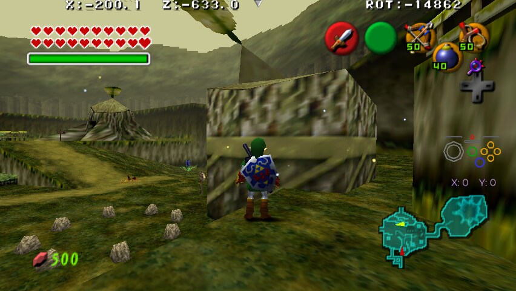
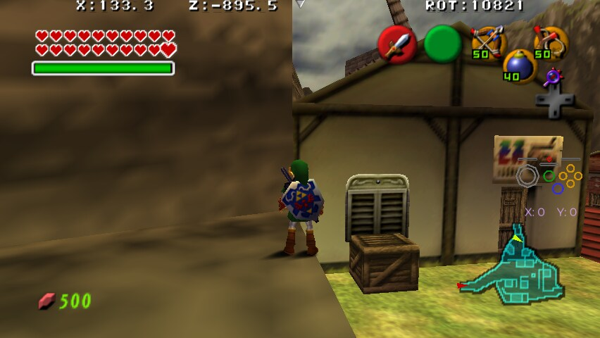
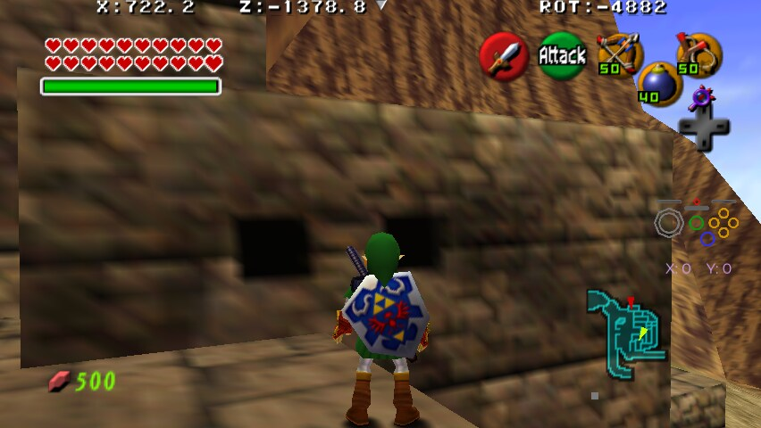
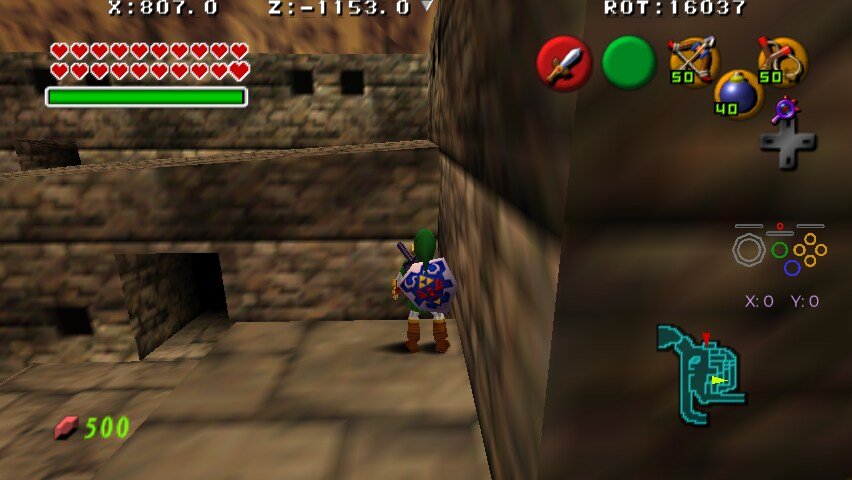
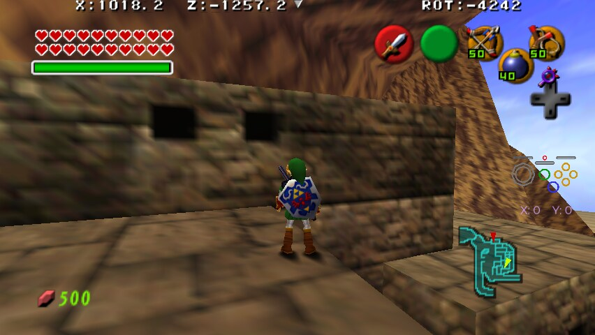
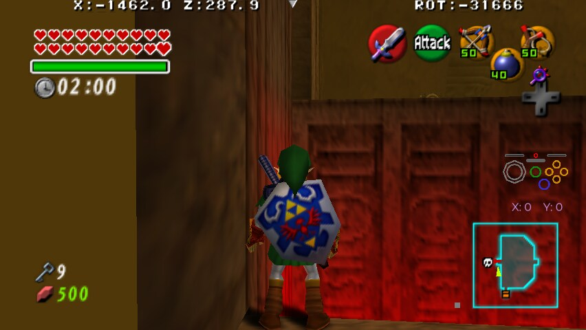
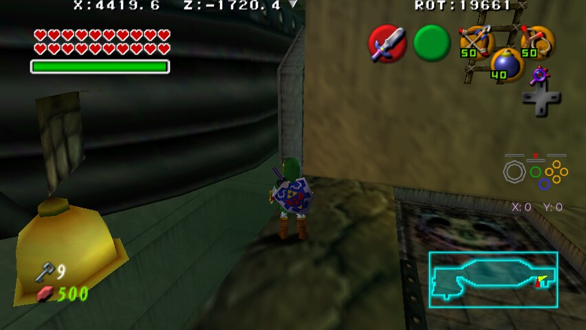
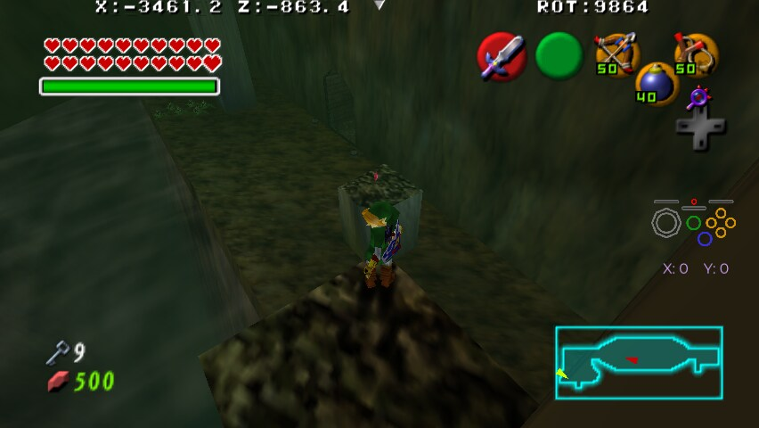
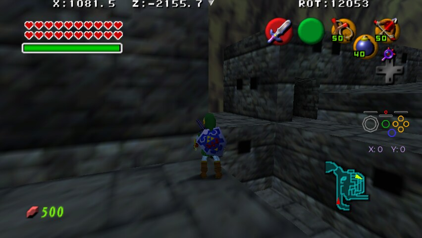

Due to the autojump system and the generous ledge grab range, it is often possible to make jumps that on the surface seem impossible.There are also several cases where the unusual physics of backflips or sidehops clear gaps or climb things that otherwise would not be possible.This trick enables all such cases where the trick is trivial to execute if known about and does not have a large reset time if failed,combining several individual tricks from other Ocarina of Time randomisers.
Kokiri Forest, jumping onto Mido's House to skip climb as Adult.

Kakariko Village, jumping to the Man on Roof either by jumping onto Potion Shop from the front as Adult, or sidehopping off the tower as either age.

Kakariko Windmill, using the short wall to jump onto the grinder, and from there reaching the heart piece.
Gerudo Fortress, jumping from the top of the lower set of vines and ladding at the base of the upper vines.

Gerudo Fortress, jumping from the base of the upper vines to the sloped roof without having to climb them.

Gerudo Fortress, jumping from the sloped roof to the top of the upper vines as Adult in order to skip climbing them.

Dodongo's Cavern, backflipping onto the armos in order to reach the raised switch as Child without climb.
Dodongo's Cavern, jumping from the top of the ladder to one of the pillars in spike trap room as Adult, and from there to the chest. Note that in Master Quest using the blocks to start the jump instead is not a trick but requires Grab.
Dodongo's Cavern, pulling one of the graves in the back of Master Quest and using that to roll jump onto the ledge where the Gold Skulltula is. This combined with the pots nearby can be used to get that GS Check without a weapon.
Jabu Jabu's Belly, jumping from the lift as Adult in order to dive deeper and skip Silver Scale, as Adult's larger hitbox prevents them form simply diving under.
Fire Temple, jumping to the boss door by jumping against the wall.

Water Temple, jumping into the canal from the nearby door and swimming into the channel, skipping Iron Boots.
Shadow Temple, jumping onto the Ship's Wheel to skip the block and ladder.

Shadow Temple, jumping from the Chasm Scarecrow to the top of the broken pillar with a Jumpslash.

Forest Trial, cutting the corner to get a jump that allows Child to reach the end of Beamos room.
Gerudo Fortress, jumping from the long East to West roof to the Gold Skulltula as Adult.
